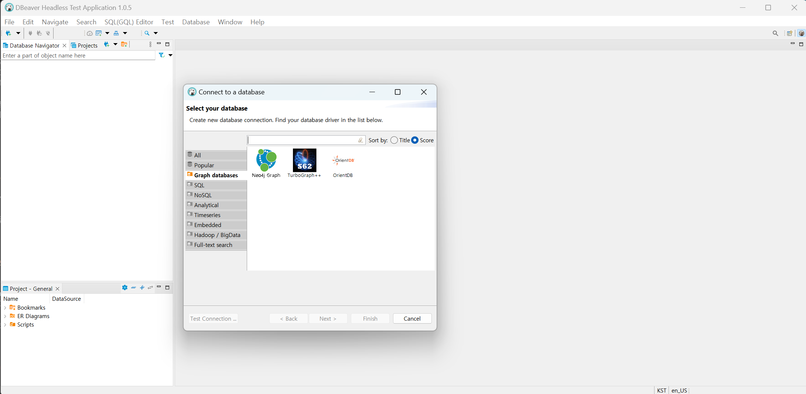

ViT 시작하기¶
ViT로 GraphDB(TurboGraph++, Neo4j) 연결/시작¶
본 프로그램을 처음 사용하는데 참고 할 수 있는 간략한 사용법을 설명하며, 해당 화면들은 Windows 10 운영체제에서 실행 된 화면이다.
현재 TurboGraph++, Neo4J 두 가지로 접속 할 수 있도록 구성되어 있으며, 메뉴얼에서는 TurboGraph++와 Neo4j에 생성된 DB를 사용하여 진행 과정을 소개한다.
TurboGraph++와 Neo4j의 JDBC가 다르므로 TurboGraph++를 모든 기능을 지원하고, Neo4j는 기능이 미지원되지거나 동작에 차이점이 발생 될 수 있다.
프로그램을 실행하면 WelCome 이미지가 나타나고 프로그램이 시작된다.
다음은 Database가 연결된 항목이 아무것도 없을 경우 발생 되는 초기화면이다. 초기화면에서 database를 선택하여 연결/추가할 수 있다.
